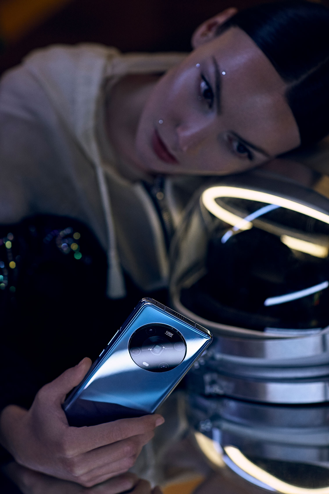
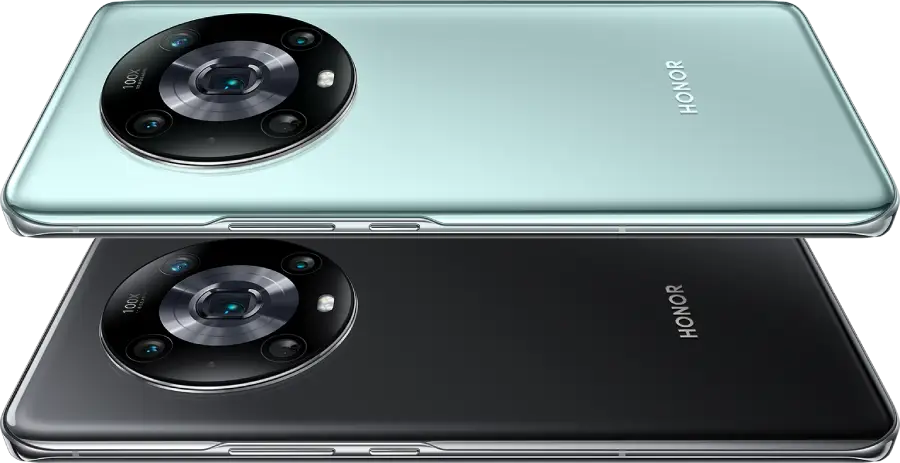

Con HONOR Magic4 Pro, el concepto de cámara en un smartphone ha alcanzado una nueva dimensión. Más allá de capturar vídeo o imágenes, el I+D de Honor ha conseguido poner en la palma de nuestra mano un dispositivo de diseño increíble con el que nos sentimos creadores del séptimo arte.
Arte por dentro… y por fuera.
El diseño simétrico de HONOR Magic4 Pro entiende estética y
funcionalidad como un todo. El smartphone presenta una pantalla de
curvatura cuádruple, de agarre cómodo y gran tamaño: 6,81 pulgadas y
biseles ultra finos. Disponible en negro y cian, la carcasa está
rematada por la impresionante disposición en círculo de las lentes,
el famoso diseño “Eye of Muse” de la compañía, que resalta el
carácter premium y único del dispositivo y lo diferencia de la
competencia.
Rendimiento y tecnología para poder grabar, fotografiar, editar.
Un móvil capaz de manejar foto y vídeo con un nivel profesional debe
ser puntero en rendimiento. El procesador Qualcomm Snapdragon 8 Gen
1 pone al HONOR Magic4 Pro a la cabeza en velocidad de proceso ultra
rápida. Y la batería de 4.600 mAh cuenta con la tecnología HONOR
SuperCharge inalámbrica de 110W: es posible cargarla al 100% en solo
30 minutos, colocando a HONOR Magic4 Pro como imbatible en este
aspecto.

Seguridad para el contenido de tu móvil.
HONOR Magic4 Pro está equipado con el sensor 3D Sonic Gen 2 de
Qualcomm, a día de hoy la solución de seguridad de huellas
dactilares más fiable del mundo. El dispositivo incluye también
desbloqueo con reconocimiento facial tridimensional y la nueva
función Llamada de Privacidad, que ajusta el volumen del audio
entrante para adaptarse al entornos: incluso en un ambiente
silencioso, como un ascensor, las personas que están a tu lado no
podrán escuchar la voz de tu interlocutor al teléfono.

Calidad.
Como todos los dispositivos de la compañía, HONOR Magic4 Pro ha
pasado un exigente sistemas de test punteros que miden desde la
experiencia de usuario hasta la calidad de los materiales. En este
último aspecto, HONOR utiliza para la fabricación de sus productos
materiales innovadores y de alta calidad, y cada unidad debe superar
ocho procesos clave para medir su flexibilidad y su resistencia
tanto a impactos como a la humedad o a las temperaturas extremas.
